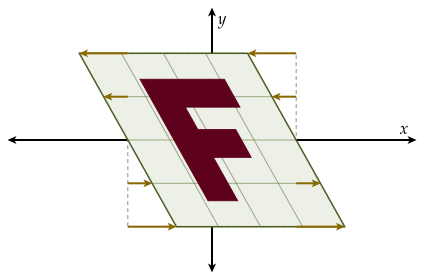

A rotation made of three shears
Predict: A shear only slides points along horizontal lines, or only along vertical lines. The picture will be sheared horizontally, then vertically, then horizontally again. After which of the three shears do you expect it to look like a square again?
Where the picture started
The picture now
How the current shear moves points
The window shows −2.3 ≤ x ≤ 2.3 and −3.2 ≤ y ≤ 3.2, with the same unit on both axes; the marks on the axes are one unit apart. The picture is the square with corners (±1, ±1), and its centre stays at the origin.
Move the sliders, or press Play to watch the three shears one after another.

How to read this figure
- The picture is a square with a letter F and a few of its own grid lines. The dashed square shows where it started. Its centre is the origin, which no shear moves.
- The matrix Hₐ sends (x, y) to (x + ay, y), and V_b sends (x, y) to (x, y + bx). The mustard arrows show how the current shear moves the corners and the midpoints of the sides: they are all horizontal for Hₐ and all vertical for V_b, and points farther from the axis move farther.
- In the product A = HₐV_bHₐ the factor on the right acts first. The boxes under the picture show the three factors; the one being applied is outlined in wine, and the finished ones in olive.
- “Applied so far” is the product of the shears carried out up to this moment. After three shears it equals the rotation matrix beside it.
The picture looks distorted after one shear and after two. Its area, however, is the same at every moment. Why?